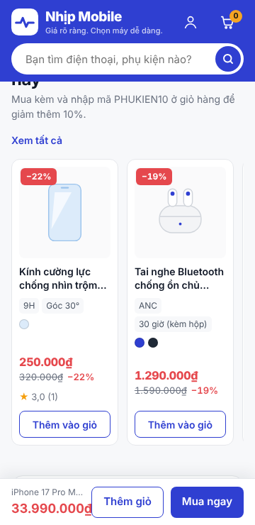

Chạy lúc 00:33 ngày 12/11/2026 · Python 3.13.18 · SQLite 3.53.1 · Linux-6.18.44-fc-v378-x86_64-with-glibc2.39 · có Playwright (chạy được các bước cần trình duyệt)
Tất cả kiểm thử đều đạt. 17 test case theo đặc tả: 17/17 đạt.
| Mã | Yêu cầu | Bước thực hiện | Dữ liệu | Kết quả mong đợi | Kết quả thực tế | Kết luận |
|---|---|---|---|---|---|---|
| TC-01 | FR-04 | Tìm kiếm không dấu | "dien thoai samsung" | Hiện SP Samsung | Gợi ý trả về 6 SP, trang kết quả 7 SP – tất cả là Samsung | Đạt |
| TC-02 | FR-02 | Lọc giá rồi bấm vào SP, bấm Back | 5–10 triệu | Quay lại vẫn giữ bộ lọc | Trên Chromium: lọc 5–10 triệu → mở SP → Back: URL còn ?gia=5-10, ô lọc vẫn tích, số SP không đổi | Đạt |
| TC-03 | FR-05 | Chọn màu hết hàng | Màu có tồn = 0 | Không chọn được, nút mua không bật | SKU AP001-1TB-BAC2: hiện "Tạm hết hàng", nút Mua ngay bị khóa; gửi thẳng yêu cầu thêm giỏ cũng bị từ chối | Đạt |
| TC-04 | FR-06 | Tăng số lượng vượt giới hạn | Bấm + lần thứ 4 | Báo "Tối đa 3 sản phẩm" | Ở 3 sản phẩm nút + bị khóa, ghi "Tối đa 3/đơn"; yêu cầu thứ 4 bị từ chối với thông báo "…chỉ mua tối đa 3 sản phẩm…", giỏ giữ nguyên 3 | Đạt |
| TC-05 | FR-07 | Áp mã khi đơn chưa đủ tối thiểu | Giỏ 4,8tr, mã tối thiểu 5tr | Báo lỗi, tổng không đổi | Giỏ 4.990.000₫ + mã SINHVIEN500 → báo "Mã chỉ áp dụng cho đơn từ 5.000.000₫". tổng vẫn 4.990.000₫ | Đạt |
| TC-06 | FR-07 | Một khách dùng mã 2 lần | Mã giới hạn 1 lần/khách | Lần 2 bị từ chối | Lần 1 giảm 500.000₫; lần 2 (cùng SĐT, trình duyệt khác) bị từ chối: "Bạn đã dùng mã SINHVIEN500 rồi" | Đạt |
| TC-07 | FR-08 | Đặt hàng với SĐT sai định dạng | "09123" | Báo lỗi dưới ô, không gửi form | Trên Chromium: bấm Đặt hàng → lỗi hiện ngay dưới ô SĐT, form KHÔNG gửi đi; máy chủ cũng tự chặn (400) nếu bị vượt qua | Đạt |
| TC-08 | FR-09, NFR-04 | Hai trình duyệt cùng đặt SKU còn 1 máy, bấm gần như cùng lúc | Tồn = 1 | Chỉ một đơn thành công; đơn còn lại báo hết hàng; tồn không âm | 2 luồng đặt cùng lúc: 1 đơn thành công, 1 đơn báo "vừa được người khác mua hết"; có thể bán = 0, không âm | Đạt |
| TC-09 | FR-09 | Sửa giá trong trình duyệt (DevTools) trước khi đặt | total = 1000 | Đơn vẫn tính đúng giá ở server | Gửi kèm total=1000, price=1000: đơn vẫn lưu 14.990.000₫ (giá tra từ CSDL) | Đạt |
| TC-10 | FR-10 | Bấm "Đặt hàng" hai lần liên tiếp | — | Chỉ tạo một đơn | Gửi 2 lần cùng mã chống trùng → cả 2 trả về đơn NM2611120004, chỉ 1 đơn trong CSDL; nút cũng tự khóa | Đạt |
| TC-11 | FR-11 | Tra cứu với mã đúng, SĐT sai | — | "Không tìm thấy đơn phù hợp" | Mã NM2611080001 + SĐT sai → "Không tìm thấy đơn phù hợp", không lộ thông tin đơn | Đạt |
| TC-12 | FR-13 | Khách hủy đơn đang giao | Trạng thái Đang giao | Không có nút hủy; gọi trực tiếp API bị từ chối | Đơn NM2611090001 (Đang giao): không có nút hủy; gửi thẳng yêu cầu hủy bị từ chối, trạng thái giữ nguyên | Đạt |
| TC-13 | FR-16 | Admin chuyển Chờ xác nhận → Đã giao bỏ qua bước | — | Bị từ chối | Đơn Chờ xác nhận chỉ có nút Xác nhận / Hủy; gửi thẳng yêu cầu → Đã giao bị từ chối, trạng thái không đổi | Đạt |
| TC-14 | NFR-03 | Khách thường truy cập /quan-tri | Tài khoản role customer | Bị chuyển về đăng nhập / lỗi 403 | Chưa đăng nhập → chuyển về /dang-nhap; tài khoản khách → lỗi 403 ở mọi trang /quan-tri | Đạt |
| TC-15 | FR-12 | Đăng nhập sai 5 lần | — | Tài khoản bị khóa tạm 15 phút | Sai lần 5 → "Đăng nhập tạm khóa 15 phút trên thiết bị này"; nhập đúng mật khẩu vẫn bị chặn 15 phút. Chủ tài khoản ở máy khác vẫn đăng nhập được (kẻ xấu không khóa được người khác) | Đạt |
| TC-16 | FR-20 | Gửi IPN giả có chữ ký sai | — | Đơn không đổi sang paid; ghi log cảnh báo | IPN chữ ký giả → mã 97, đơn vẫn "chờ thanh toán", ghi cảnh báo vào database/thanh-toan.log; IPN thật → mã 00; gửi lặp → mã 02 | Đạt |
| TC-17 | NFR-06 | Mở PDP ở 360px | — | Không cuộn ngang, thanh mua dính đáy hiển thị | Chromium 360×740: chiều rộng trang = màn hình (không cuộn ngang); cuộn xuống thấy thanh giá + nút mua dính sát đáy | Đạt |

| Nhóm | Số kiểm thử | Đạt | Không đạt | Chưa chạy | Kiểm thử không đạt |
|---|---|---|---|---|---|
| GĐ1 – Nền móng: CSDL, trang chủ, tìm kiếm, đăng nhập | 12 | 12 | 0 | 0 | — |
| GĐ2 – Xem và chọn sản phẩm | 13 | 13 | 0 | 0 | — |
| GĐ3 – Giỏ hàng, mã giảm giá, đặt hàng, tra cứu | 20 | 20 | 0 | 0 | — |
| GĐ4 – Tài khoản người mua | 13 | 13 | 0 | 0 | — |
| GĐ5 – Trang quản trị | 15 | 15 | 0 | 0 | — |
| GĐ6 – Tin tức, hỗ trợ, chính sách | 11 | 11 | 0 | 0 | — |
| 17 test case theo tài liệu đặc tả (Phần 9.6 d) | 17 | 17 | 0 | 0 | — |
Đo thử (Chromium, khổ điện thoại, giả lập 4G: 9 Mbps, trễ 150 ms): Trang chủ 0,58 giây · Danh mục (PLP) 0,42 giây · Chi tiết (PDP) 0,61 giây. Mục tiêu < 3 giây.
| Mã | Nhóm | Yêu cầu | Cách đáp ứng | Đánh giá | Ghi chú / bằng chứng |
|---|---|---|---|---|---|
| NFR-01 | Hiệu năng | Trang chủ, PLP, PDP < 3 giây trên 4G; Lighthouse ≥ 70 | Trang nhẹ (ảnh SVG, không thư viện JS ngoài). Đo thử bằng Chromium giả lập 4G: xem dòng đo bên dưới. | Một phần | Chưa chạy Lighthouse chính thức; có thể tự đo: Chrome → F12 → Lighthouse. |
| NFR-02 | Bảo mật | Mật khẩu băm chậm; HTTPS; CSRF mọi form; không lưu số thẻ | PBKDF2-SHA256 có muối riêng; mã CSRF ở mọi form POST; không có ô nhập số thẻ. | Đạt (trừ HTTPS) | HTTPS chỉ cần khi đưa lên mạng; bản chạy trên máy cá nhân dùng http://localhost. |
| NFR-03 | Bảo mật | /quan-tri chỉ cho staff/admin; khóa 15 phút sau 5 lần sai | Kiểm tra quyền ở mọi trang quản trị; nhân viên bị chặn trang của admin. | Đạt | TC-14, TC-15 |
| NFR-04 | Toàn vẹn dữ liệu | Không âm kho khi 2 người cùng đặt SKU cuối | Giữ hàng bằng câu lệnh cập nhật có điều kiện trong transaction BEGIN IMMEDIATE. | Đạt | TC-08 |
| NFR-05 | Khả dụng | Mua hàng ≤ 5 bước từ PDP; ≤ 3 phút với 5 người | Luồng: PDP → Thêm vào giỏ → Giỏ hàng → Thanh toán → Đặt hàng = 4 bước. | Một phần | Cần nhờ 5 người thử và ghi thời gian (mẫu phiếu trong kịch bản demo). |
| NFR-06 | Responsive | Đúng ở 360px, 768px, 1280px; không cuộn ngang | Đã rà 27 trang khách ở 390px và 1366px; TC-17 ở 360px. | Đạt | TC-17 |
| NFR-07 | Truy cập | Ảnh có alt; tương phản ≥ 4.5:1; dùng bàn phím ở form thanh toán | Ô nhập có nhãn, viền focus rõ, lỗi hiện dưới ô và tự focus ô sai. | Một phần | Ảnh trang trí để alt rỗng có chủ đích; chưa đo tương phản bằng công cụ. |
| NFR-08 | Tương thích | Chrome, Edge, Safari, Firefox bản mới | Chỉ dùng HTML/CSS/JS chuẩn, không cần cài thêm. | Một phần | Kiểm thử tự động chạy trên Chromium (cùng lõi với Chrome, Edge); Safari, Firefox cần thử tay. |
| NFR-09 | Pháp lý | Trang Bảo mật, Đổi trả, Giao hàng, Điều khoản; lưu thời điểm đồng ý; nhãn mô phỏng | Có đủ 4 trang (GĐ6); lưu consent_at + phiên bản khi đặt hàng/đăng ký; nhãn "Website mô phỏng" ở đầu mọi trang. | Đạt | test_giai_doan_6, test_giai_doan_3 |
| NFR-10 | Bảo trì | Mã nguồn GitHub + README; nạp dữ liệu mẫu bằng một lệnh | HUONG_DAN.md; lam_moi_du_lieu.bat nạp lại dữ liệu mẫu bằng một cú bấm. | Một phần | Chưa đưa lên GitHub. |
| # | Giai đoạn | Lỗi | Nguyên nhân | Cách sửa |
|---|---|---|---|---|
| 1 | GĐ1 | Trang con kế thừa bố cục bị mất nội dung các khối | Bộ ghép giao diện xóa thẻ block quá sớm | Chỉ xóa thẻ block ở bước hiển thị cuối |
| 2 | GĐ1 | Tên vai trò ở đầu trang hiện chữ "viên" với admin | Cắt chuỗi sai | Hiện đúng "Quản trị viên" / "Nhân viên" |
| 3 | GĐ2 | Trang So sánh lặp nhóm thông số | Thông số không được sắp theo nhóm | Sắp theo thứ tự nhóm cố định |
| 4 | GĐ2 | Trùng mã SKU khi sinh dữ liệu mẫu | Mã SKU chỉ dựa vào tên hãng | Thêm mã sản phẩm vào SKU |
| 5 | GĐ3 | Trang giỏ hàng, thanh toán tràn ngang trên điện thoại | Cột lưới không co được | Đặt min-width:0 cho các cột |
| 6 | GĐ3 | Hai lớp CSS trùng tên (.f-grid, .pay) làm vỡ chân trang và banner | Đặt tên lớp trùng nhau | Đổi tên thành .f-tiles, .paym |
| 7 | GĐ5 | Trang /quan-tri/hop-thu bị trang "sắp có" chặn | Thứ tự nạp đường dẫn | Nạp trang dự phòng sau cùng |
| 8 | GĐ5 | Doanh thu ở Tổng quan khác Báo cáo | Hai trang dùng hai cách tính | Dùng chung một hàm: chỉ đơn hoàn tất, theo ngày hoàn tất |
| 9 | GĐ5 | Dữ liệu mẫu có đơn nhận tại cửa hàng ở trạng thái "Đang giao" | Bộ sinh dữ liệu không phân biệt cách nhận | Đơn nhận tại cửa hàng bỏ qua bước vận chuyển |
| 10 | GĐ5 | Ô nhập trong bảng phiên bản không gửi được | Thẻ form đặt trong hàng của bảng (HTML không hợp lệ) | Dùng thuộc tính form="…" cho từng ô |
| 11 | GĐ6 | Ảnh bìa tin tức ở trang chủ bị thu nhỏ thành ô vuông 68px | Lớp .thumb của thư viện ảnh sản phẩm ghi đè | Thêm quy tắc riêng cho ảnh bìa bài viết |
| 12 | GĐ6 | Trang Hỗ trợ tràn ngang 7px ở khổ điện thoại | Cột trong khối đầu trang không co | min-width:0 cho các cột |
| 13 | GĐ6 | Nút chuyển banner, nút So sánh quá nhỏ để bấm trên điện thoại | Vùng bấm 10px | Tăng vùng bấm lên ≥ 26–32px |
| 14 | GĐ7 | SĐT sai vẫn gửi form lên máy chủ (TC-07) | Chỉ kiểm tra ở máy chủ | Thêm kiểm tra ngay trên trình duyệt, báo dưới ô |
| 15 | GĐ7 | Người mua chậm hơn ở chiếc cuối nhận thông báo chung chung (TC-08) | Thông báo không nêu sản phẩm | Báo rõ "…vừa được người khác mua hết" |
| 16 | GĐ7 | Chưa có bước xác minh chữ ký thanh toán (TC-16) | Thanh toán mô phỏng gọi thẳng | Thêm IPN có chữ ký HMAC-SHA512, kiểm tra số tiền, ghi log |
| 17 | Sau bàn giao | B1 · Trên máy Windows: đặt hàng xong, tra cứu đơn, Tài khoản, chi tiết đơn quản trị đều lỗi 500 (11 kiểm thử hỏng) | Một câu SQL dùng cột bảng ngoài trong ORDER BY của truy vấn con: SQLite mới chấp nhận, SQLite đi kèm Python trên Windows thì không | Viết lại bằng JOIN thường + truy vấn ảnh riêng; từ nay chạy kiểm thử trên cả SQLite 3.45 và 3.53, và duyệt tự động mọi trang bằng cả 4 vai trò |
| 18 | Sau bàn giao | B2 · Ai biết email cũng khóa được tài khoản người khác 15 phút | Khóa tính theo tài khoản | Đếm lần sai theo cặp (thiết bị, tài khoản): chỉ máy gõ sai bị chặn; một máy sai 20 lần thì bị chặn mọi tài khoản; email không tồn tại nhận cùng thông báo |
| 19 | Sau bàn giao | B3 · Số lượng 0, âm hoặc chữ bị lặng lẽ đổi thành 1 | Hàm thêm giỏ tự gán mặc định | Báo lỗi "Số lượng phải là số nguyên từ 1 đến 3" (mã 400 với yêu cầu JSON) |
| 20 | Sau bàn giao | B4 · Giá sốc không tự sang ngày mới nếu web chạy qua nửa đêm | Chỉ tạo đợt giá sốc lúc bật web | Kiểm tra ngày ở mỗi yêu cầu (mỗi ngày làm một lần, có khóa luồng); có kiểm thử giả lập sang ngày |
| 21 | Sau bàn giao | B5 · Hủy đơn mua giá sốc không trả lại suất giá sốc | Hàm hủy đơn trả kho, trả lượt mã giảm giá nhưng quên suất giá sốc | Khi hủy, tìm đúng suất giá sốc của đợt lúc đặt (cùng phiên bản, cùng giá) và trả lại số suất |
| 22 | Sau bàn giao | B6 · Gợi ý tìm kiếm, danh sách so sánh chỉ xét 200 sản phẩm đầu (lỗi tiềm ẩn) | Đặt giới hạn cố định limit=200 | Bỏ giới hạn ở gợi ý, so sánh, chọn máy, sản phẩm tương tự |
| 23 | Sau bàn giao | B7 · Khung "Giá phải trả" trên banner phụ thuộc tiêu đề banner | So sánh với một câu tiêu đề cố định | Chỉ hiện khung giá khi đường dẫn của banner trỏ tới đúng trang sản phẩm đó; ghi chú quy tắc ở trang quản trị Banner |